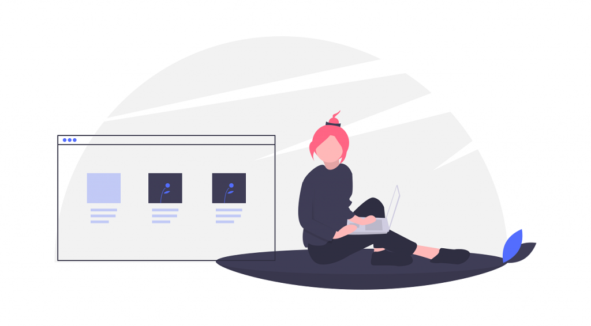

What makes a company great? That’s simple. It’s the people who
work here.
Custom Web Development
This service is required, when you have very specific need or wanted to build a solution which
is very core and unique towards solving your business needs. Although every business is unique
in terms of mind sets and type of customer you have.
On what basis you can choose for this service
1.Just schedule a call with us and we will be happy to assist you
2.Do a market research or just google to see if there are some SaaS based products available
